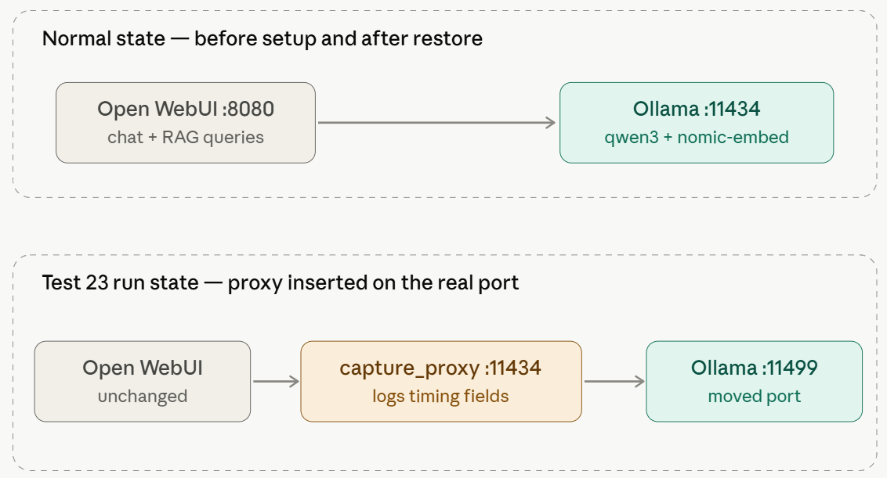

← Test Log · AI Lab Portal Home
Test 21 found that Open WebUI's own background tasks — automatic title, tag, and follow-up generation — were the real culprit behind slow queries, and disabling them collapsed the median chat latency from ~58 s to ~13 s.
Test 22 verified the RAG pipeline end to end (5/5 known-answer queries correct, embedding engine switched to Ollama-served nomic-embed-text) but observed wall-clock time exceeding 30 s against a displayed thinking time of only 7–14 s — an unresolved gap that motivated this bench.
Where does the wall-clock gap actually live — model inference, the embedding call, or Open WebUI itself?
Design: paired trials, same known-answer question with and without the knowledge base attached, N=15 per condition (30 total), alternating A/B to spread any drift, fresh chat per trial.
Instrumentation: a capture proxy sat on Ollama's real port; the real Ollama instance moved to an alternate port behind it. Open WebUI itself was unmodified and unaware of the swap. Ollama's own reported timing fields (load_duration, prompt_eval_duration, eval_duration, total_duration) served as ground truth for model-side time — wall clock minus Ollama's own total is the overhead attributable to something outside Ollama.

Controls: Test 21's config held throughout (Title/Follow-Up/Tags generation disabled). A controlled warm-up ran before any scored trial, and a written restore procedure was executed and verified afterward. embed_fired was captured per trial as an empirical check on whether the embedding call actually ran.
The first execution attempt paused during its own warm-up check: ollama ps showed the embedding model had never loaded. The root cause was a design flaw, not a bug in the running bench — the original spec's RAG condition attached the knowledge base by sending the literal text #RAG Test <question>, mirroring how a person types it into Open WebUI's chat box. That syntax is parsed by Open WebUI's own frontend before the request is ever built; sent as plain text over the raw API, it does nothing. The original design would have run 30 trials comparing two effectively identical no-context conditions.
The fix: attach the knowledge base directly via the API's own files field, referencing the knowledge base's ID. This was verified against the normal, un-swapped Ollama instance before resuming — no live-infra risk was taken to find or test the fix. The environment was fully restored between the aborted attempt and the real run, and the spec was revised in place (now v3) to document the finding.
The warm-up gate existed to control model state — and instead caught a design flaw before any scored trial ran. Checks that control state catch more than checks that merely record it.
| Metric | no_rag (N=15) | rag (N=15) |
|---|---|---|
| Wall clock — median | 44.0 s | 44.9 s |
Ollama total_duration — median | 41.7 s | 30.9 s |
| Overhead (wall − Ollama total) — median | 2.3 s | 11.7 s |
| Embedding call fired | 0/15 (expected) | 15/15 (expected) |
Embedding total_duration — median (when fired) | — | 0.04 s |
The gap lives in Open WebUI's own RAG pipeline — retrieval, chunk assembly, and prompt injection — not in model inference and not in the embedding call itself, which is negligible. This closes a meaningful chunk of Test 22's open observation: roughly 30 s of Ollama's own time plus roughly 12 s of Open WebUI overhead approximates the wall clock actually observed there.
Measured but not yet explained: ~9.4 s is a lot for retrieval against a five-fact, single-chunk document. Whether this cost is fixed per query or scales with corpus size is unknown, and deferred to a future test against a harder, more realistic document set.
Ollama's own generation time was shorter for RAG trials (median 30.7 s) than for plain trials (median 41.2 s) — the opposite of what "RAG adds cost" would predict looking at generation alone. This is very likely an artifact of reusing a single question: the no-RAG condition cannot answer it and generates long, hedging text, while the RAG condition retrieves the fact directly and answers concisely with a citation.
Consequence: raw wall-clock is not a clean RAG-vs-plain comparison in this run. The isolated overhead metric above — which factors out generation length entirely — is the reliable number, not total wall clock. A planned follow-up test using a question answerable in both conditions would remove this confound.
embed_fired true on 15/15 RAG trials, false on 15/15 plain trials).